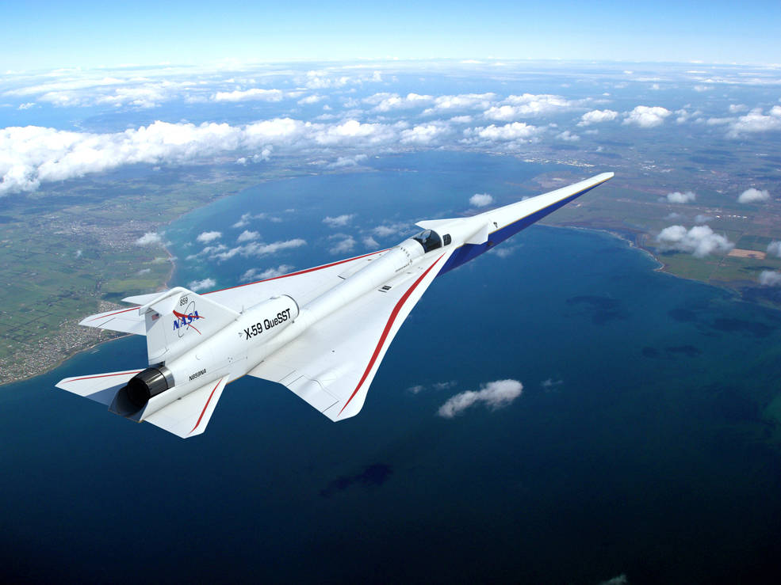

NASA has awarded a contract to Harris Miller Miller & Hanson Inc. of Burlington, Massachusetts, to support a national campaign of community overflight tests using the agency’s X-59 Quiet SuperSonic Technology research aircraft. This cost-plus-fixed-fee, indefinite-delivery/indefinite-quantity contract has a maximum potential value of approximately $29 million with an eight-year period of performance.
NASA is designing and building the X-59 research aircraft – a piloted, single-seat supersonic X-plane – with technology that reduces the loudness of a sonic boom to that of a gentle thump. NASA's aeronautical innovators are leading a team across government and industry to collect data that could allow supersonic flight over land, dramatically reducing travel time within the United States or to anywhere in the world.
